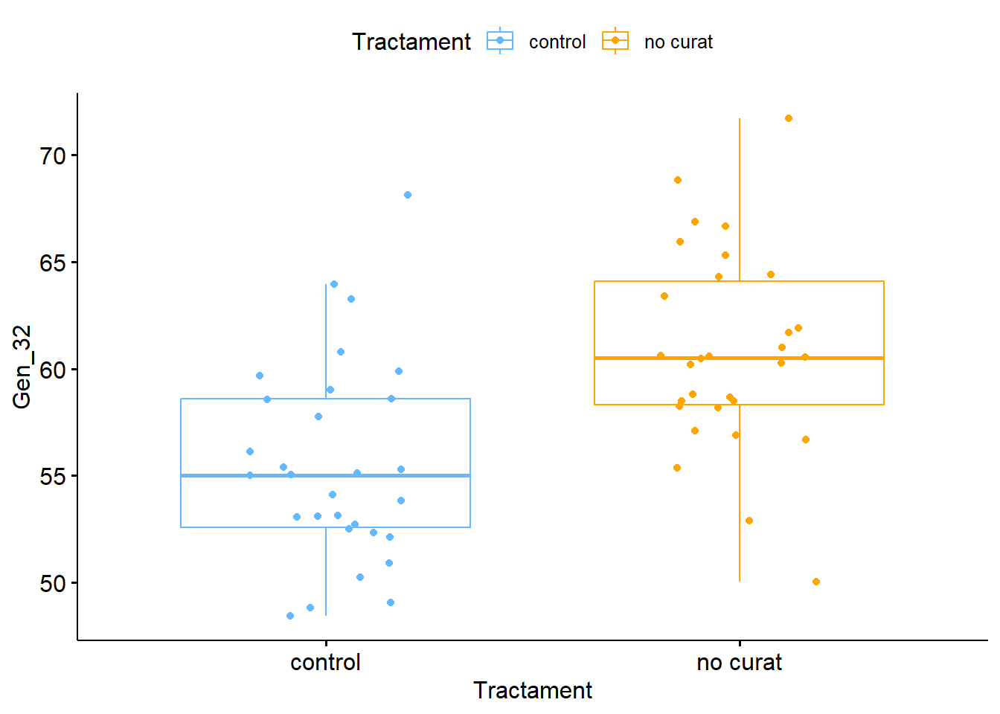
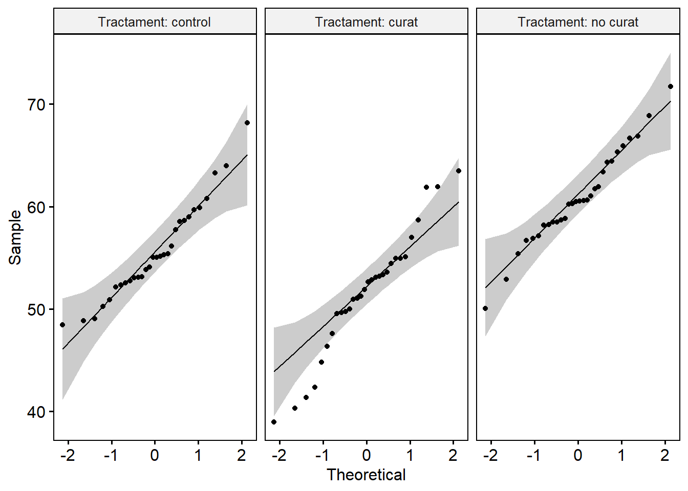

Pràctica 3. Testos d’igualtat de mitjanes per dues o més poblacions: T-test i ANOVA
Objectius de la pràctica
Els objectius principals de la pràctica són:
- Manipulació de data.frames (combinar data.frames, filtrar files, seleccionar columnes…)
- Aplicar testos de comparació de mitjanes (t test o ANOVA)
- Comprovar els supòsits de normalitat i homocedasticitat
- Compendre les hipòtesis estadístiques associades a aquests testos i prendre desicions a partir dels seus resultats
- Visualitzar de manera adequada les dades
- Relacionar les hipòtesis científiques plantejades inicialment amb els resultats estadístics
1. Importar dades a R
Crea un nou RMarkdown anomenat “Practica3” i guarda’l a la carpeta de Pràctiques.
- Crea un nou chunk que inclogui les diferents llibreries que utilitzarem durant la pràctica:
- En un altre chunk defineix el teu directori de treball
- Carrega les dades. A partir d’ara treballaràs amb el fitxer d’abundàncies filtrat a la pràctica anterior (fitxer d’abundàncies de gens: “practR_rnadata_filt.csv” i fitxer de metadades: “practR_metadades.csv”)
# carregar dades
metadata <- read.csv2("dades/practR_metadades.csv", dec = ",", row.names = 1)
data <- read.csv2("dades/practR_rnadata_filt.csv", dec = ",", row.names = 1)*Nota: Fixa’t que si importes les dades amb l’argument row.names = 1, automàticament es llegeix la primer columna com a noms de les files.
- Comprova que hi ha els mateixos noms de les files en els dos datasets (metadata i data)
# comprovem que els dos datasets tenen el mateix ordre de files (mostres)
all(rownames(data) == rownames(metadata)) ## [1] TRUE- Combina les dues matrius de dades en un sol data.frame (l’anomenarem
df):
- Fes les transformacions necessàries:
# transformem a factor
df$Individu <- factor(df$Individu)
df$Temps <- factor(df$Temps, levels = c(0, 1, 4, 24), labels = c("basal", "1set", "4set", "24set"))
df$Sexe <- factor(df$Sexe)Ara ja tenim les dades a punt, podem començar els anàlisis
2. Selecció d’un subconjunt de dades
En aquesta pràctica analitzarem l’expressió d’alguns gens a temps basal (recorda que a l’estudi hi ha mostres a temps basal, però també a 1, 4 i 24 setmanes després d’iniciar el tractament).
- Selecciona només les mostres preses a temps basal:
# definim les files que compleixen els requisits especificats ($Temps == "basal")
ind_basal <- which(df$Temps == "basal")
# seleccionem només aquestes files en un nou data.frame
df0 <- df[ind_basal, ] Comprova que has seleccionat les mostres que tocaven
3. Comparació de l’expressió entre dues poblacions
Es vol saber si l’expressió del Gen 32 a temps basal és diferent entre els individus infectats no curats i els individus control
Per poder resoldre la pregunta de recerca, caldrà comprovar si hi ha diferències significatives en l’expressió del Gen 32 entre dues poblacions: Controls vs No Curats.
Aquesta comparació ja l’hem estudiat. Quin test haurem d’aplicar?
Exploració de les dades
Per fer-ho s’han de seleccionar prèviament només aquelles mostres (a temps basal) que pertanyen a individus controls i a individus no curats (els curats els deixem per més endavant).
- Selecciona a partir de
df0aquelles mostres que són controls o no curats:
# definim les files que compleixen els requisits especificats ($Tractament == "control" o bé $Tractament == "no curat")
ind0_ctrl_nc <- which(df0$Tractament == "control" | df0$Tractament == "no curat" ) # el simbol | indica "o bé"
# seleccionem les files desitjades del data.frame df0
df0_ctrl_nc <- df0[ind0_ctrl_nc, ] # dataset basal amb controls i no curats
head(df0_ctrl_nc)## Tractament Temps Individu Edat Sexe Xpert Gen_1 Gen_2 Gen_3 Gen_4
## mostra1 control basal 1 50 F 2.875775 3.64 6.66 45.68 44.66
## mostra5 control basal 2 34 F 9.404673 17.58 12.05 53.13 42.03
## mostra9 control basal 3 70 M 5.514350 13.65 30.96 50.67 41.14
## mostra13 control basal 4 33 M 6.775706 5.82 7.24 54.06 45.41
## mostra17 control basal 5 22 F 2.460877 12.29 45.76 53.51 42.22
## mostra21 control basal 6 61 M 8.895393 8.25 2.73 43.74 43.03
## Gen_5 Gen_6 Gen_8 Gen_9 Gen_10 Gen_11 Gen_12 Gen_13 Gen_14 Gen_15
## mostra1 9.30 53.37 17.05 8.73 4.73 4.15 15.03 25.74 50.64 33.95
## mostra5 4.33 66.54 2.18 81.63 41.55 35.28 19.56 18.14 49.72 15.41
## mostra9 36.46 54.70 31.83 17.84 21.00 73.22 39.46 7.35 54.99 34.55
## mostra13 29.21 61.21 85.51 13.03 3.36 11.24 28.11 7.04 50.20 9.62
## mostra17 71.42 66.78 3.17 11.60 3.65 4.79 29.15 36.57 50.62 16.76
## mostra21 1.98 55.87 8.34 5.42 3.71 37.37 15.80 19.11 50.63 5.73
## Gen_16 Gen_17 Gen_18 Gen_19 Gen_20 Gen_21 Gen_22 Gen_23 Gen_24 Gen_25
## mostra1 8.00 40.05 27.62 0.39 8.00 6.58 0.93 50.49 12.93 11.13
## mostra5 45.35 43.30 31.19 23.72 7.80 15.30 2.93 15.84 4.87 6.40
## mostra9 1.29 46.96 23.62 16.45 27.52 24.99 13.42 2.72 2.95 14.00
## mostra13 20.91 37.02 29.90 9.09 51.02 11.79 10.47 88.84 25.75 23.71
## mostra17 7.86 38.90 28.41 33.68 17.83 8.05 11.10 4.33 27.42 20.34
## mostra21 42.54 37.44 20.68 20.65 19.00 1.96 2.05 3.98 1.15 9.00
## Gen_26 Gen_27 Gen_28 Gen_29 Gen_30 Gen_31 Gen_32 Gen_33 Gen_34 Gen_35
## mostra1 28.56 7.57 2.39 13.39 51.67 42.60 48.44 54.03 23.11 4.54
## mostra5 14.31 16.20 12.95 30.83 47.35 40.01 52.33 55.33 15.35 100.75
## mostra9 15.66 5.98 6.24 25.93 46.63 49.47 48.82 50.69 0.57 3.94
## mostra13 15.39 12.21 28.70 49.87 55.43 46.10 50.90 56.18 8.58 12.31
## mostra17 3.66 13.23 44.00 1.72 46.37 55.94 59.90 59.78 12.84 13.74
## mostra21 12.38 21.17 6.11 2.24 46.19 51.12 55.02 57.35 10.50 35.66
## Gen_36 Gen_37 Gen_38 Gen_39 Gen_40 Gen_41 Gen_42 Gen_43 Gen_44 Gen_45
## mostra1 41.09 42.88 49.13 39.91 55.79 32.80 51.40 54.35 81.17 50.32
## mostra5 1.84 4.42 43.50 47.05 4.53 33.50 54.29 64.36 19.94 34.89
## mostra9 1.67 27.36 40.83 41.17 34.21 5.00 42.97 24.89 18.25 8.24
## mostra13 13.11 11.06 46.32 41.34 9.53 60.10 38.37 10.24 28.73 35.31
## mostra17 18.33 33.71 51.84 55.18 7.37 11.63 53.34 27.26 70.77 25.04
## mostra21 41.55 8.05 55.45 45.63 3.44 34.22 42.25 87.87 6.85 27.10
## Gen_46 Gen_47 Gen_49
## mostra1 66.43 65.04 39.56
## mostra5 80.58 73.52 53.29
## mostra9 22.35 64.43 7.46
## mostra13 34.55 76.62 20.85
## mostra17 26.38 69.54 2.88
## mostra21 7.75 69.91 0.50- Visualitza l’expressió del Gen 32 en controls i en no curats. Per fer-ho aplica la funció
ggboxplot()de la llibreriaggpubr:
ggboxplot(data = df0_ctrl_nc, x = "Tractament", y = "Gen_32",
color = "Tractament",
palette = c("steelblue1", "orange"),
add = "jitter")## Warning: The `size` argument of `element_line()` is
## deprecated as of ggplot2 3.4.0.
## ℹ Please use the `linewidth` argument instead.
## ℹ The deprecated feature was likely used in
## the ggpubr package.
## Please report the issue at
## <https://github.com/kassambara/ggpubr/issues>.
## This warning is displayed once per session.
## Call `lifecycle::last_lifecycle_warnings()` to
## see where this warning was generated.## Warning: The `size` argument of `element_rect()` is
## deprecated as of ggplot2 3.4.0.
## ℹ Please use the `linewidth` argument instead.
## ℹ The deprecated feature was likely used in
## the ggpubr package.
## Please report the issue at
## <https://github.com/kassambara/ggpubr/issues>.
## This warning is displayed once per session.
## Call `lifecycle::last_lifecycle_warnings()` to
## see where this warning was generated.
S’observen diferències aparents entre els dos grups? Descriu les dades i planteja un possible resultat.
Anàlisi estadística
Per determinar si efectivament hi ha o no diferències significatives entre controls i no curats haurem d’aplicar un test estadístic: T test d’igualtat de mitjanes per mostres independents
Les hipòtesis del T test són: \[H_0: \mu_{control} = \mu_{no.curat}\] \[H_a: \mu_{control} \neq \mu_{no curat}\]
1r. Abans d’aplicar el T test cal comprovar els supòsits:
- Cal comprovar que les dues mostres provenen de poblacions amb distribució normal (es comprova mitjançant el test de shapiro:
shapiro.test()).
- Aplica el test de Shapiro:
## $control
##
## Shapiro-Wilk normality test
##
## data: X[[i]]
## W = 0.95291, p-value = 0.2022
##
##
## $`no curat`
##
## Shapiro-Wilk normality test
##
## data: X[[i]]
## W = 0.98067, p-value = 0.843Interpreta el resultat del test estadístic (tingues en compte les hipòtesis estadístiques del test)
- Cal conèixer si les variàncies dels dos grups són iguals o no (es comprova mitjançant el test F d’igualtat de variàncies:
var.test()).
- Aplica test F d’igualtat de variàncies:
##
## F test to compare two variances
##
## data: df0_ctrl_nc$Gen_32 by df0_ctrl_nc$Tractament
## F = 1.023, num df = 29, denom df = 29, p-value = 0.9516
## alternative hypothesis: true ratio of variances is not equal to 1
## 95 percent confidence interval:
## 0.4869212 2.1493593
## sample estimates:
## ratio of variances
## 1.023019Interpreta el resultat del test estadístic (tingues en compte les hipòtesis estadístiques del test)
2n. En base als resultats dels dos testos anteriors aplica el test de comparació de mitjanes més adient.
##
## Two Sample t-test
##
## data: df0_ctrl_nc$Gen_32 by df0_ctrl_nc$Tractament
## t = -4.389, df = 58, p-value = 4.882e-05
## alternative hypothesis: true difference in means between group control and group no curat is not equal to 0
## 95 percent confidence interval:
## -7.699751 -2.876249
## sample estimates:
## mean in group control mean in group no curat
## 55.532 60.820Interpreta el resultat del test estadístic (tingues en compte les hipòtesis estadístiques del test)
Escriu les conclusions de l’anàlisi: relaciona el resultat del test estadístic amb la pregunta de recerca
4. Comparació de l’expressió entre més de dues poblacions
Es vol saber si l’expressió del Gen 32 a temps basal és diferent entre els individus infectats no curats, els curats i els controls
Exploració de les dades
Fes un gràfic per representar l’expressió del Gen 32 en els tres grups estudiats. Pensa bé quin és el data.frame que conté els tres grups de Tractament a temps basal (control, curat i no curat). En el gràfic, fes coincidir els mateixos colors de les caixes que en el boxplot anterior.
Anàlisi estadística
Per determinar si efectivament hi ha o no diferències significatives entre els tres grups haurem d’aplicar un test estadístic: ANOVA
Les hipòtesis de l’ANOVA són:
\[H_0: \mu_{control} = \mu_{curat} = \mu_{no.curat}\]
\[H_a: \mu_{control} \neq \mu_{curat} ; \mu_{control} \neq \mu_{no.curat} ; \mu_{curat} \neq \mu_{no.curat}\]
1r. Abans d’aplicar l’ANOVA cal comprovar els supòsits:
- Comprovar que totes mostres provenen de poblacions amb distribució normal (es comprova mitjançant el test de shapiro:
shapiro.test()).
- Aplica el test de Shapiro pels tres grups
## $control
##
## Shapiro-Wilk normality test
##
## data: X[[i]]
## W = 0.95291, p-value = 0.2022
##
##
## $curat
##
## Shapiro-Wilk normality test
##
## data: X[[i]]
## W = 0.96415, p-value = 0.3935
##
##
## $`no curat`
##
## Shapiro-Wilk normality test
##
## data: X[[i]]
## W = 0.98067, p-value = 0.843- Visualitza amb un QQ plot la normalitat de les dades (fes-ho amb la funció
ggqqplot()). Les dades (de cada grup) s’ajusten a la línia?

Interpreta el resultat del test estadístic i del gràfic (tingues en compte les hipòtesis estadístiques del test)
- Conèixer si les variàncies dels tres grups segueixen l’homocedasticitat (es comprova mitjançant el test de Levene:
leveneTest()). Per aplicar la funcióleveneTest()hauràs de carregar la llibreriacar(ho hauries d’haver fet al principi, al primer chunk).
## Levene's Test for Homogeneity of Variance (center = median)
## Df F value Pr(>F)
## group 2 0.8826 0.4174
## 87Interpreta el resultat del test estadístic (tingues en compte les hipòtesis estadístiques del test)
- Identificar que les dades són independents: en aquest cas, els individus control, no curats i curats són subjectes independents entre ells.
2n. Si es compleixen els tres supòsits es pot aplicar l’ANOVA:
## Df Sum Sq Mean Sq F value Pr(>F)
## df0$Tractament 2 1297 648.3 24.15 4.54e-09 ***
## Residuals 87 2335 26.8
## ---
## Signif. codes: 0 '***' 0.001 '**' 0.01 '*' 0.05 '.' 0.1 ' ' 1Interpreta el resultat del test estadístic (tingues en compte les hipòtesis estadístiques del test)
Una alternativa per comprovar la normalitat de les dades és contrastar si els residus de l’anova segueixen una distribució normal:
- Comprova la normalitat dels residus de l’anova
##
## Shapiro-Wilk normality test
##
## data: an1$residuals
## W = 0.98553, p-value = 0.42083r. Només quan l’ANOVA surt significativa (almenys un dels grups és diferent de la resta), aplicarem proves de comparació múltiples per conèixer quin/quins grup/s difereixen entre si.
- Realitza proves de comparació múltiple (prova post-hoc) per veure quin (o quins) dels grups difereix de la resta. Descriu els resultats i digues quin ajust del p-valor s’ha fet.
##
## Pairwise comparisons using t tests with pooled SD
##
## data: df0$Gen_32 and df0$Tractament
##
## control curat
## curat 0.00380 -
## no curat 0.00031 2.1e-09
##
## P value adjustment method: holmAra realitza de nou múltiples T-test (pairwise.t.test) canviant l’ajust del p-valor. Comenta els resultats.
Fes una altra prova post-hoc amb el test de Tukey (
TukeyHSD()). Comenta els resultats.
## Tukey multiple comparisons of means
## 95% family-wise confidence level
##
## Fit: aov(formula = df0$Gen_32 ~ df0$Tractament)
##
## $`df0$Tractament`
## diff lwr upr p adj
## curat-control -3.978667 -7.168458 -0.7888752 0.0105154
## no curat-control 5.288000 2.098209 8.4777915 0.0004566
## no curat-curat 9.266667 6.076875 12.4564581 0.0000000Escriu les conclusions de l’anàlisi: interpreta el resultat del test estadístic i relaciona-ho amb la pregunta de recerca. Ajuda’t del gràfic de caixes del Gen 32 en els tres grups per la interpretació.